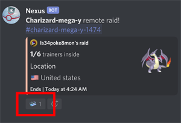
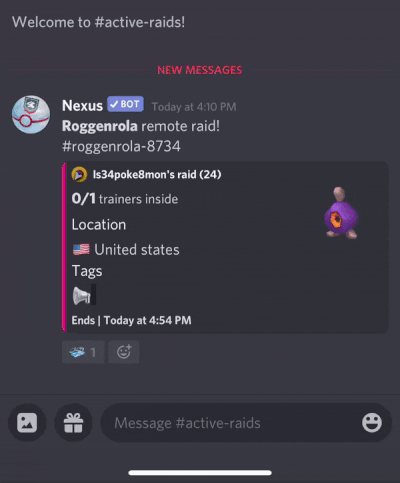
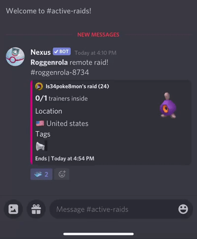
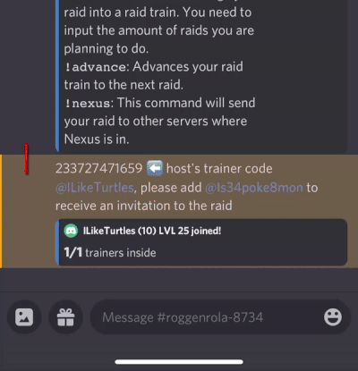
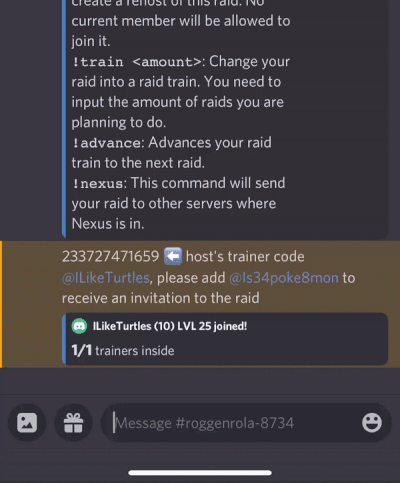
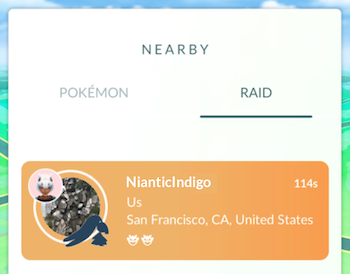
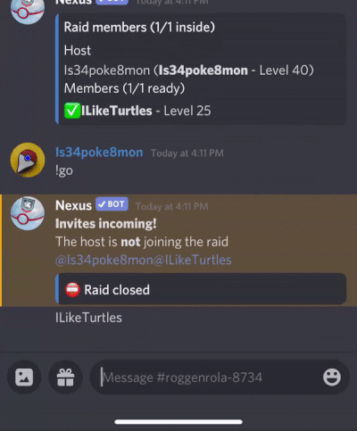

Joining Raids¶
In the “raid-channel” setup for the community, Trainers can join raids by clicking the “raid pass”, and Nexus will prompt the Trainer to join the raid lobby. (See example below)

Raid Lobby Commands¶
Command |
Description |
|---|---|
|
Use this to leave a raid. If you are the Host the raid will end. |
|
Use this in a raid to get information from the host. |
|
Use this to mark yourself as ready inside a raid. |
|
Use this in a raid to see how much time is left on the raid. |
|
Use this to mark yourself as unready inside a raid. |
Tip
Nexus recognizes the word ready in the raid lobby so using !ready is optional.
Example walk through (steps)¶
1. Click the “raid pass”.

2. Click the link (or notification) to enter the raid lobby.

3. Once in the lobby copy the Host’s friend code and paste it in the Pokémon Go app.

4.Return to Discord and let the Host know you’re ready and wait for the invite notification.

5. Return to Pokémon Go app and wait for the raid invite.

6. After the raid has ended return to Discord and use the !bye command to leave the raid.

{kind=link}